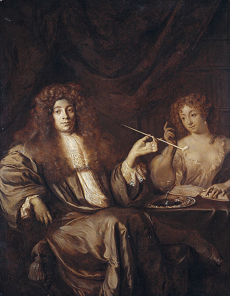

Monday, June the 14th, 2010
back to: title, date or indexes

This is Hadrian Beverland (c.1651–1716), accompanied by “a wanton woman”. Beverland was a theologian of sorts and a classical scholar of great erudition. His book detailing the sexual abnormalities of the ancient world was described as “abominable and scandalous” and “an abortion from depraved brains” by the authorities of Leyden University, and he was banished from Holland. He spent much of the rest of his life in London and is buried in the churchyard of St Paul's, Covent Garden.
He made various attempts to gain permission to return to his homeland, and when these failed he developed a persecution mania to which he gave vent in a series of pamphlets. These take the form of letters to him from the fictitious Perin de Vago, together with Beverland's responses. Beverland was particularly exercised by a certain Tempest, “that curst flatterer” and “prophanest Reprobat” who “tried to make a Tennissball of a Foreigner”. Tempest sent “Girrls into the Fiels, who with a wanton eye could move olds mens entrails” and “Wensches with Linnen Oisters and Orang Appels who breathe life into Deathmen”. “Alackaday,” he complained, “only for loaking fresh in a frosty evening you must be suspected to be a Deboche.” Others apart from “the Gnat Tempest” were scheming against him, and “If the Mystery of the Plot lies hidden in the bottom of Hell, it will not only be difficult to draw it out of the Dunghill, but also dangerous to disturb the Dragons, Snakes and Hornets. Let them Lices who suk their livelyhood out of our carcass glorys in their guile. You avoid their Companye.”
Towards the end of his life Beverland prepared a catalogue of his collection of paintings for sale, in which he included this verse:
(The Song of the Borts of pray,) I have no Wife / The Devil Upon Two Crutches / Chear! Chear! / Hier / Carry me to Hell. / I do not know my L. where Hell is: But if it may please your L. I carry you to the Devil. / Go unto the Devil Tavern. / What upon Crutches! / I am very Old, if it may please your L. / No Old Devil can please me. Have you no younger Devils in Hell? / Yes, Long Brown, who carries little Davits upon his Shoulders: / What is become of little Gibson?
Hooting Yard on the Air, June the 17th, 2010 : “The Alignment Of Tree Clumps In The East Kent Area” (starts around 08:26)
Hooting Yard on the Air, October the 24th, 2013 : “A Clucking Thing” (starts around 14:01)